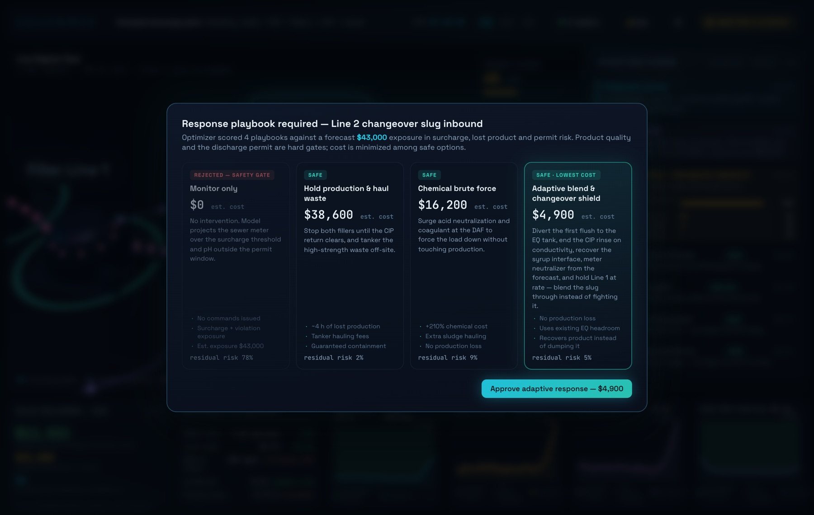
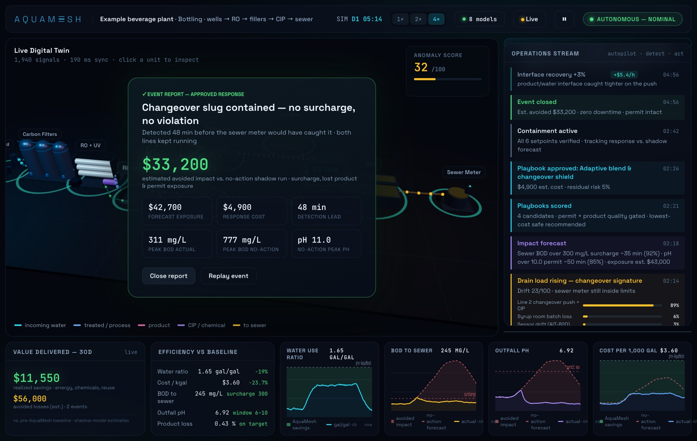

Case study · Beverage bottling
A changeover slug, caught 48 minutes before the sewer meter.
A worked example in the live digital twin of a modelled bottling plant: wells, carbon and RO, the syrup room, two filler lines, CIP, DAF and the sewer meter on one model. A Line 2 product changeover pushes syrup and caustic to the drain. This is what the twin saw, what it recommended, and what the operator approved.
- Detection lead
- 48 min before the meter
- Forecast exposure
- $42,700
- Approved response
- $4,900, no lost production
- Estimated avoided
- $33,200
A modelled plant, not a customer. The plant and its readings are simulated, and the avoided impact is measured against a no-action run of the same model.
The plant, as a live twin
Water, product and wastewater on one model.
The headline number is the water use ratio: gallons of water per gallon of beverage shipped. In steady running the twin holds it near 1.65, against a 2.05 baseline, by recovering rinse and CIP water and ending rinses on conductivity instead of a timer.

The changeover
Seen at the drain, before the bill.
- 1
Detect
Drain load starts rising while the sewer meter is still inside limits. The signature matches a Line 2 changeover pushing syrup and caustic (89%), not a sensor fault (3%).
- 2
Forecast
Sewer BOD will cross the 300 mg/L surcharge line in about 35 minutes; outfall pH will leave the 6–10 permit window in about 50.
- 3
Score
Four responses, with product quality and the permit as hard limits. Doing nothing fails the permit gate. The cheapest safe option costs $4,900.
- 4
Approve and act
The operator approves: first flush to the EQ tank, CIP rinse ended on conductivity, syrup interface recovered, neutralizer metered to the forecast.
The decision
Four ways to respond. One that keeps both lines running.

| Response | Cost | Outcome |
|---|---|---|
| Monitor only | $0 | Rejected: sewer BOD over the surcharge line and pH outside the permit |
| Hold production and haul waste | $38,600 | Safe, but about 4 hours of lost production plus tanker fees |
| Chemical brute force | $16,200 | Safe, at about three times the usual chemical cost |
| Adaptive blend and changeover shield | $4,900 | Safe and lowest cost; product recovered, no production lost |
The result
Contained, with both lines running.
Checked against a no-action run of the same model. Peak sewer BOD reached 311 mg/L, at the surcharge line, instead of 777. The outfall stayed inside its pH permit, where the no-action run peaked at pH 11.0.

See the twin run on your plant.
Book a walkthrough of the live twin, or start with a free audit on your historian export.
Example case study on a modelled plant. The plant, its readings and the avoided impact are simulated, not a customer’s results.